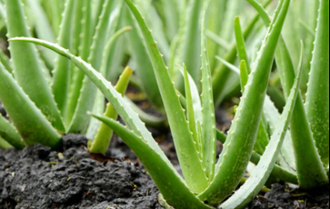
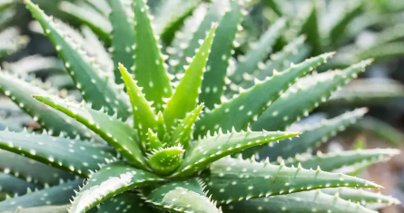
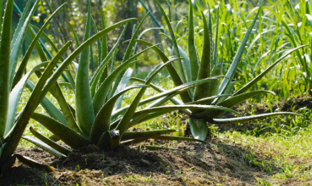

Aloe Vera
El aloe vera, tambien conocido como
sabila, es una planta suculenta valorada por sus propiedades medicinales y cosmeticas.
Su gel transparente y viscoso se extrae de las hojas y se utiliza para tratar quemaduras leves,
irritaciones cutaneas, hidratar la piel y promover la cicatrizacion. Ademas, el
aloe vera contiene compuestos bioactivos como vitaminas, minerales y
antioxidantes que contribuyen a sus propiedades curativas.
Se ha utilizado tradicionalmente en diversas culturas y en la actualidad se encuentra en una variedad de
productos para el cuidado de la piel y suplementos naturales.
Especie



El Aloe vera es una planta de aspecto
roseta que puede alcanzar entre 60 y 100 cm de altura. Sus hojas son gruesas, carnosas y de color verde,
con bordes dentados y una sustancia gelatinosa en su interior.
El Aloe vera es originario de regiones aridas y semideserticas del norte de africa, asi como de la Peninsula
Arabi. Se ha naturalizado en muchas partes del
mundo debido a su popularidad y a sus usos variados.
En general, el Aloe vera es una planta versatil con numerosos usos medicinales y cosmeticos. Sin
embargo, es importante usarlo con precaucion y consultar a un profesional de la salud antes de
consumirlo internamente o usarlo para tratar afecciones medicas.